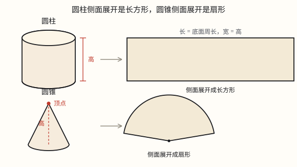

圆柱和圆锥的认识
圆柱由两个全等的圆和一个曲面围成，侧面展开是长方形；圆锥只有一个圆底面和一个顶点，侧面展开是扇形。
| 所属主题 | 立体图形 |
|---|---|
| 所属模块 | 图形与几何 |
| 课标学段 | 第三学段（5~6年级） |
| 前置知识 | 圆的特征、圆的周长与圆周率 |
| 核心素养 | 空间观念几何直观量感 |
教材定位
人民教育出版社《2024年版》
对应六下第 3 单元「圆柱和圆锥」：圆柱和圆锥的认识与展开图。
课标要求
| 图形与几何·图形的认识与测量 | 认识长方体、正方体和圆柱，了解这些图形的展开图，探索并掌握这些图形的体积和表面积的计算公式，认识圆锥并探索其体积的计算公式，能用这些公式解决简单的实际问题。 印刷第 33 页 行为动词：掌握 |
|---|
说明
易拉罐、水杯、笔筒、水泥管，形状都是圆柱。它由三部分围成：上面一个圆、下面一个圆、中间围一圈曲面（叫侧面）。上下两个圆完全一样大，叫底面。
两个底面之间的距离叫高。圆柱的高有无数条——上下两个圆平行、又一样大，随便在哪一处竖直量，距离都相同。所以说「这个罐子高 12 厘米」，量哪一条都一样。
把圆柱的侧面沿一条高剪开、摊平，得到一个长方形：长方形的长，正好是底面圆绕一圈的长度（底面周长 π d）；长方形的宽，就是圆柱的高。反过来，一张长方形纸卷起来，就能围成圆柱的侧面。
圆锥长得不一样：它只有一个圆底面，上面收拢成一个顶点，中间也是一个曲面。从顶点到底面圆心的距离是它的高；顶点只有一个、圆心也只有一个，所以圆锥只有一条高。
圆锥的侧面展开不是长方形，而是一个扇形——从顶点沿一条斜线剪开摊平，两条直边是从顶点剪开的「缝」，弯的那条弧正好是底面圆绕一圈的长度。
对比着记：圆柱两个底面、没有顶点、高无数条、侧面展开是长方形；圆锥一个底面、一个顶点、高只有 1 条、侧面展开是扇形。共同点是都有一个曲面做的侧面。
使用场景
购物货架：饮料罐、茶叶罐、薯片筒，认形状、算标签纸要多长，都从这里起步。
饮食与配比：冰淇淋蛋筒、圆锥形纸杯、漏斗，都是圆锥；杯子、奶瓶多是圆柱。
工程与建材：水泥管、通风管道、桥墩是圆柱形；工地上的沙堆、石子堆常堆成圆锥形。
校园手工：用卡纸卷笔筒、做锥形纸帽，卷的就是长方形和扇形。
家中物件：水杯、卷纸筒、灯罩，随手就能找到这两种立体图形。
注意点
圆柱有 3 个面：2 个平面（上下底面）加 1 个曲面（侧面），不是 2 个。圆锥只有 2 个面：1 个底面加 1 个侧面。
高别记反：圆柱有无数条高，圆锥只有 1 条。
侧面展开别记混：圆柱给长方形，圆锥给扇形。圆锥展开不是三角形，因为侧面是弯的，边不直。
长方形摊平后，长对应底面周长，宽对应高。这两项对调，后面的侧面积就全错了。
圆柱的高是两底面之间的垂直距离，不是侧面上的某条斜线。
上下两个面必须一样大才是圆柱。一头大一头小的杯子是圆台，不算圆柱。
为什么是这样

图 1：侧面撕下来摊平——圆柱给一张长方形，圆锥给一把扇子
算理推导
拿一个饮料罐。摸上下两个面：都是平的圆。把罐子倒过来，上面的圆能和下面的圆完全重合——两个底面全等，这是圆柱的第一条特征。
再用手指贴着侧面绕一圈：一路都是弯的，摸不到一条棱，也找不到一个角。说明侧面是一个曲面，不是几块平面拼起来的。
沿一条高把侧面的包装纸剪开、摊平（图 1 左）。摊平后是一个长方形：它的长刚好绕底面一圈，所以长 = 底面周长 =π d；它的宽就是罐子的高。卷回去，长方形又变回那圈曲面。
圆柱的高为什么有无数条？上下两个底面平行、又一样大，从下底面上任意一点竖直往上量，到上底面的距离都相同。下底面上的点有无数个，高就有无数条，而且长度全都相等。
再看圆锥（图 1 右）：底面是一个圆，侧面往上收，收成一个点，这个点叫顶点。从顶点竖直落到圆心，这条线段就是高。顶点只有一个、圆心也只有一个，两点之间只能连一条线段，所以高只有 1 条。
把圆锥的侧面从顶点沿一条斜线剪开摊平，得到一个扇形：两条直边是剪开的缝，弯的弧是底面圆绕一圈的长度。用一张扇形纸卷起来，正好做成圆锥的侧面。
一并对比：长方形纸卷起来是圆柱，扇形纸卷起来是圆锥。差别来自「上下一样粗」还是「越往上越细」——粗细不变，侧面摊平就是长条；一路收窄，摊平就收成一个尖，成了扇形。
动手实验
准备一张长 31.4 厘米、宽 10 厘米的长方形卡纸，两个直径 10 厘米的圆片。把长方形卷成筒、接口粘住，两个圆片正好扣在两头，一个圆柱就做成了；量一量筒口一周，正好 31.4 厘米，就是长方形的长。再用一张半径 12 厘米左右的扇形卡纸，把两条直边重合粘住，得到一个尖头朝上的圆锥，底面是一个圆。把两个模型并排放，数面、数顶点、比高：圆柱 3 个面、没有顶点、高无数条；圆锥 2 个面、1 个顶点、高 1 条。
按场景的例题
例 1（场景：购物消费） 给圆柱形饮料罐设计一圈标签纸
罐子底面直径 6 厘米、高 12 厘米。标签纸贴在侧面上，展开后是一个长方形，它的长和宽各是多少厘米？
解：长方形的长就是底面周长：3.14 × 6 = 18.84 厘米；宽就是罐子的高：12 厘米。
答：长 18.84 厘米，宽 12 厘米。
例 2（场景：饮食与配比） 冰淇淋蛋筒是什么形状
一个圆锥形蛋筒，它有几个面？几条高？侧面展开是什么图形？如果底面直径 6 厘米，展开后扇形那条弯边的长是多少？
解：圆锥有 2 个面（1 个圆底面 + 1 个曲面侧面），只有 1 条高；侧面展开是扇形。扇形弯边的长就是底面周长：3.14 × 6 = 18.84 厘米。
答：2 个面、1 条高，展开是扇形，弧长 18.84 厘米。
例 3（场景：工程建造） 工地上一根实心的圆柱形桥墩
这根桥墩有几条高？沿着高竖直切开，切面是什么形状？横着截断，截面又是什么形状？
解：圆柱的高有无数条，量哪一条都一样，桥墩高 2 米就是它的高。沿着高竖直切开，切面是长方形，长是桥墩的高、宽是底面直径；横着截断，截面是一个圆。
答：高有无数条；纵切面是长方形，横截面是圆。
例 4（场景：校园生活） 手工课用长方形卡纸卷一个笔筒
卡纸长 31.4 厘米、宽 10 厘米，卷成圆柱形笔筒（接口处不计），底面直径是多少？笔筒的高是多少？
解：卷起来后，卡纸的长围成了底面一圈，所以底面周长是 31.4 厘米，直径 31.4 ÷ 3.14 = 10 厘米；卡纸的宽就是笔筒的高，10 厘米。
答：底面直径 10 厘米，高 10 厘米。
常用推论
圆柱侧面展开是长方形：长 = 底面周长 =π d = 2π r，宽 = 高 h。
圆柱有无数条高且长度都相等；圆锥只有 1 条高。
圆柱的两个底面是全等的圆；圆锥只有一个底面。
圆锥侧面展开是扇形，扇形那条弧的长等于底面周长。
圆柱有 3 个面（2 个平面 + 1 个曲面），圆锥有 2 个面（1 个平面 + 1 个曲面）。
长方形绕它的一条边旋转一周，扫出一个圆柱；直角三角形绕一条直角边旋转一周，扫出一个圆锥。
易错点
错「圆柱只有 2 个面，就是上、下两个圆。」
为什么错漏掉了侧面这个曲面。曲面虽然弯，也是围成圆柱的一个面。
正确圆柱有 3 个面：2 个底面 + 1 个侧面。
错「圆锥的高有无数条，和圆柱一样。」
为什么错圆锥只有一个顶点、一个底面圆心，两点之间只能量出一条线段。
正确圆锥只有 1 条高；圆柱才有无数条。
错「圆锥的侧面展开是一个三角形。」
为什么错侧面是曲面，摊平以后边是弯的，不是三条直边围成的三角形。
正确圆锥侧面展开是扇形。
错「圆柱侧面展开的长方形，长是圆柱的高。」
为什么错把长和宽的对应关系弄反了。长是绕底面一圈的长度，宽才是高。
正确长 =π d（底面周长），宽 =h（高）。
错「这个杯子上面口大、下面底小，也是圆柱。」
为什么错圆柱的两个底面必须一样大。上下不一样的是圆台。
正确它不是圆柱；只有上下两个面全等、侧面是曲面的才是圆柱。
直观理解
圆柱像一卷胶带立起来：上下两个一样大的圆，中间围一圈。圆锥像一顶尖帽子：一个圆底，往上收成一个尖。把侧面那层「纸」撕下来摊平，圆柱递给你一张长方形，圆锥递给你一把扇子。
圆柱上下两个圆，侧面一卷成长方；圆锥一圆一个尖，侧面摊开是扇形。